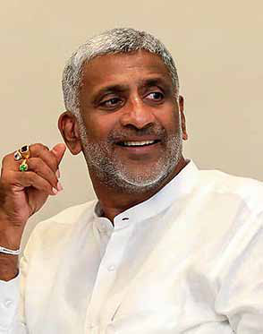
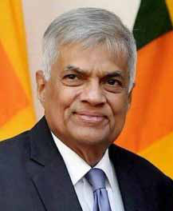
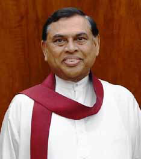
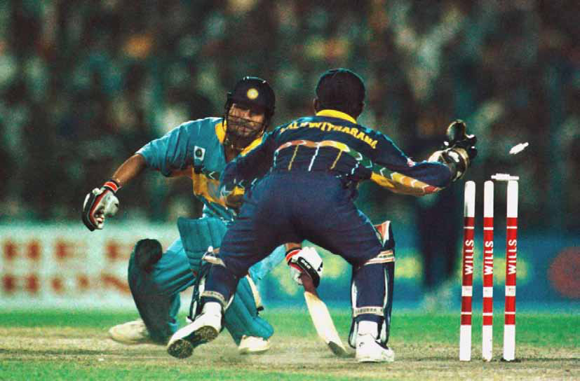
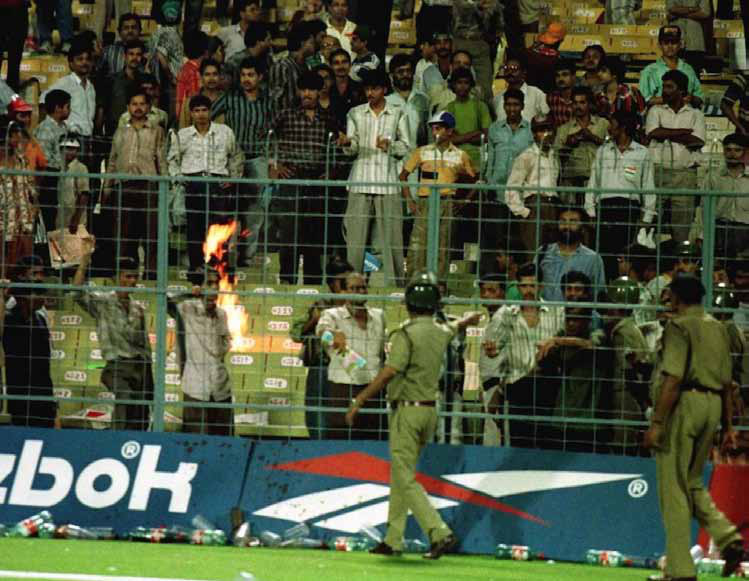
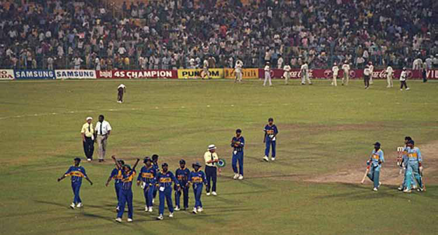
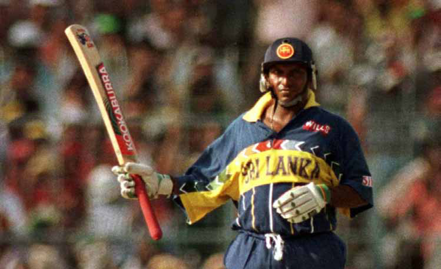
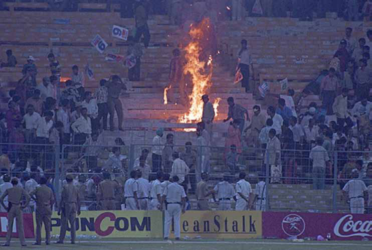
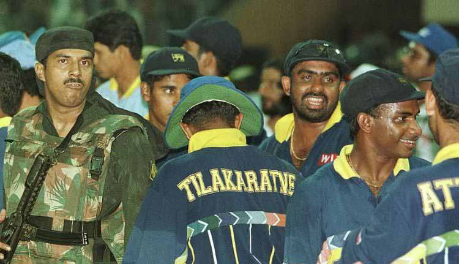

Opinion Navigating Uncertainty: SLPP's Factional Divide Ahead of Presidential Election
Opinion Navigating Uncertainty: SLPP's Factional Divide Ahead of Presidential Election
Jaffna Monitor hellojaffnamonitor@gmail.com 32 T he Sri Lanka Podujana Peramuna (SLPP) is currently at a crossroads, with emerging internal divisions over strategies for the forthcoming presidential election. A notable faction is steadfast in presenting an SLPP candidate, diverging sharply from another segment favouring support for incumbent President Ranil Wickremesinghe. The pro- Rajapaksa camp within the SLPP reinforced this perspective during a key executive committee meeting, though the dialogue was brief, pending the official announcement of the election. In contrast, other SLPP members, notably those in high- ranking government roles, lean towards backing President Wickremesinghe. In a significant political move, Mahinda Rajapaksa's son and SLPP parliamentarian, Namal Rajapaksa, was unanimously chosen as the National Organizer during the SLPP's latest executive committee gathering. This critical role, formerly held by his uncle Basil Rajapaksa, represents a strategic shift in the party's hierarchy. Political analysts interpret this as positioning Namal Rajapaksa for potential presidential candidacy, signalling his rising prominence within the party. Amid these dynamics, Chief Government Whip Minister Prasanna Ranatunga, a former staunch Rajapaksha ally, casts doubt on the SLPP's prospects of fielding a successful presidential candidate. His recent comments include a nuanced critique of Namal Rajapaksa's appointment, subtly suggesting that Basil Rajapaksa would have been a more suitable choice. Moreover, Ranatunga projects a timeframe of Opinion Navigating Uncertainty: SLPP's Factional Divide Ahead of Presidential Election By: David Ignatius


Jaffna Monitor hellojaffnamonitor@gmail.com 33 five to ten years before Namal Rajapaksa could viably contest the presidency, hinting at the need for more experience. With the presidential election slated for October and debates within the SLPP about a potential early general election - a proposal President Wickremesinghe has reportedly declined - the political atmosphere is charged. The alliance between the SLPP and the United National Party (UNP), historically antagonistic, has surprisingly endured. Despite their conflicting views on whether the presidential or parliamentary elections should take precedence, both parties have struck a delicate balance to keep their coalition intact. Political pundits believe it's unlikely that a Rajapaksha family member will pursue the presidency this year, citing several reasons. A core challenge is finding a viable candidate outside the family, a notion the Rajapakshas seem reluctant to entertain, fearing it could diminish their influence over the SLPP. Moreover, siding with President Wickremesinghe could trigger a wave of defections from the SLPP to the UNP, potentially weakening the former's position in subsequent parliamentary elections. Winning the presidential race is often a precursor to success in general elections. This insight is driving the Rajapakshas to prioritize a general election. Meanwhile, the UNP, recovering from their 2020 parliamentary defeat, is pushing for a presidential election first, hoping to capitalize on President Wickremesinghe's economic recovery efforts. Basil Rajapaksa's attempts to nudge President Wickremesinghe towards a general election before the presidential polls have been unavailing. However, the possibility of dissolving Parliament through a majority MPs' resolution exists, though rallying enough SLPP support for such a move, especially with some members now allied with Wickremesinghe, is a formidable task. While the SLPP and UNP hold divergent election perspectives, a direct confrontation seems unlikely due to their interdependent relationship. Each party has its vulnerabilities, making their alliance a case of political necessity.


Jaffna Monitor hellojaffnamonitor@gmail.com 34 The 1996 World Cup Semi-Final between Sri Lanka and India is etched as a red-letter day in our cricketing history. It's a game that is still spoken about at every given opportunity, even 24 years later. And there's a reason for that. It was a typical David versus Goliath scenario. When an underdog triumphs over a favorite, it becomes a classic. In this piece, I aim not merely to narrate the incidents on the field but also to delve into the thought processes and emotions of both camps during the build-up and throughout the game. In doing so, we will encounter many perspectives previously By: Dr. Aravinthan Arunthavanathan Sports The Inside Story of the 1996 India-Sri Lanka Semi-final When David Defeated Goliath:


Jaffna Monitor hellojaffnamonitor@gmail.com 35 unheard and unseen. (The insights shared here are partly derived from social media revelations by Sanjay Manjrekar, a member of the Indian team for this game, and Sri Lankan coach Dav Whatmore during their conversations with Ravi Ashwin and Russel Arnold in live videos.) For those who cannot remember the details of the game, let's recap the proceedings so that the back stories can be understood better and their impacts analyzed. Synopsis- Sri Lanka vs India 1996 World Cup Semi-Final, Kolkata Having won the toss, India opted to field first, putting Sri Lanka into bat. Despite losing both openers in the very first over, Sri Lanka managed to post a challenging total of 251 runs in 50 overs. This was propelled by half- centuries from Aravinda De Silva and Roshan Mahanama, aided by useful thirties from Arjuna Ranatunga and Hashan Tilakaratne. In reply, India seemed well on their way to a final berth, with Sachin Tendulkar in prime form. However, at 98/1, Sachin was dismissed, courtesy of a brilliant piece of work from Kaluwaitharana. Commentating on air, Tony Greig asked, 'Will this be the start of a slide?' It turned out to be not just a slide but an avalanche. India crumbled to 120/8 on a deteriorating track, looking clueless against Sri Lanka's spin attack led by Sanath Jayasuriya. With the score at 120/8, the crowd became unruly, prompting match referee Clive Lloyd

Jaffna Monitor hellojaffnamonitor@gmail.com 36 to award the game to Sri Lanka. As a nation of 20 million went to bed with reinvigorated dreams of a World Cup win, a billion people across the Palk Strait went to bed hoping what had happened was just a bad dream. What we witnessed on the ground was just the tip of the iceberg. There was far more happening than what met the eye. Now, let's take a deep dive into this intriguing journey, dissecting the backstage events that shaped this unforgettable match. The build-up to the clash Both teams had dominated their opponents in the quarterfinals. Sri Lanka had ambushed the English batters with spin and decimated their bowlers with Sanath's brutal batting. Sanath's unprecedented exploits at such a critical juncture had significantly caught the Indian team's attention, especially regarding the power of the Sri Lankan opening duo. In the group stages in Delhi, Sanath and Kaluwitharana had ruthlessly torn through the Indian line-up, turning a mammoth chase into a seemingly minor task. As we would later see, this profoundly impacted India's strategic approach to the semi-final match. Meanwhile, India had emerged victorious in their monumental clash against arch- rivals Pakistan. On paper, boasting big names, Pakistan was considered stronger than Sri Lanka. Unlike the present, Pakistan consistently had the upper hand over India during those times. Having defeated them and fueled by emotional fanfare, the Indian team was on cloud nine. There was a sense of euphoria in the three days leading up to the semi-finals. Even the legendary Sachin Tendulkar recently admitted they felt confident about defeating Sri Lanka despite losing on the group stage. To put it succinctly, India was riding high on confidence, perhaps to the point of overconfidence, in the lead-up to the match. It was the perfect setup for the law of averages to come into play. The general expectation was that India's progression to the final in Lahore was a mere formality. India had everything to lose, while Sri Lanka had nothing to lose. This whole aspect significantly influenced some critical decisions that were to follow.

Jaffna Monitor hellojaffnamonitor@gmail.com 37 The toss and the wicket The Sri Lankans had executed their chases clinically in every game they played. Their performances against England and India were particularly impressive, showcasing the strength of Sri Lankan batting. They had effortlessly chased down India's target, racing to 50 runs within the first 4 overs – a feat remarkable for its time, decades before the advent of T20 cricket. This display of dominance surely left an indelible mark on the Indian camp, as we would soon see. Additionally, Sri Lanka had solid and experienced players like Mahanama and Tillakaratne batting at positions 6 and 7, who consistently came to the rescue during mini collapses in the middle order in both aforementioned matches. Given these successful strategies, Sri Lanka seemed to have no reason to alter their approach. However, the situation wasn't as straightforward as it seemed. Dav Whatmore, the Sri Lankan coach, revealed that upon inspecting the pitch on the day of the game, he noticed that the soil underneath was unstable, and the wicket was deteriorating. This was a clear indication that the pitch might not withstand the duration of the match. Faced with this dilemma, would a strong leader like Arjuna Ranatunga reconsider his strategy? Definitely not. When Whatmore voiced his concerns, a confident Arjuna, alongside Manager Duleep Mendis, asserted their readiness to chase down any target set by the Indians. The decision was firm: win the toss and chase. Whatmore could only wonder what the outcome would be. On the other hand, the Indian team had faced challenges in their recent pursuits. They had lost to Australia while chasing in Mumbai and encountered difficulties at certain points against the West Indies in Gwalior. Additionally, they had chosen to bat first against Pakistan. Logically, in a high-pressure game like the semi-final, they should have opted to bat first. However, they had a different plan in mind, influenced heavily by the impact of Sri Lanka's successful chase in Delhi. The Indians were so intent on countering Sri Lanka's strength and pushing them out of their comfort zone by forcing them to set a target. This represented a fundamental error common in many walks of life: focusing more on disadvantaging the opposition rather than leveraging one's own strengths. In the eyes of the Indian team, Sri Lanka and their chasing prowess were inseparable considerations. The toss went India's way; the decision went Whatmore's way. India decided to put Sri Lanka on the bat. Whatmore was a relieved man. The worst fears come true for Sri Lanka. We can be zero for none in no time — this was Dav Whatmore's guiding mantra for the Sri Lankan middle order. Ever since they had reinvented their approach at the top of the order, the Lankan think tank was aware of the potential risks. While Kaluwitharana had been dismissed early against England, Sanath Jayasuriya had taken the spotlight. Both had provided swift starts against Kenya and India, so facing an early setback wasn't something they had encountered previously. However, when Srinath dismissed both Sanath and Kalu in the first over, caught by the third man, the worst fears of every Sri Lankan fan materialized. Yet, this aggressive approach was by design. If not for this strategy, Sanath's shot selection might have faced harsh criticism.
Jaffna Monitor hellojaffnamonitor@gmail.com 38 The experienced Sri Lankan middle order, however, was ready for such contingencies. According to Whatmore, it was the experience and stability of the middle order that enabled such an aggressive strategy at the outset. Being prepared is one thing, but executing is another. The million-dollar question was whether the Sri Lankan middle order would rise to the occasion. As Sri Lanka faced their worst fears, the situation seemed exactly the opposite for India. In hindsight, however, this scenario backfired on the Indian team. As Sanjay Manjrekar would later reveal, the Indian strategy was based on the belief that Sri Lanka was overly reliant on their two openers. India's game plan hinged on the assumption that dismissing both early would effectively seal the game. This thought process dominated their preparations, with the team spending the majority of their strategy meeting—55 minutes out of an hour—focused on dismissing the openers. This was undoubtedly a reaction to their previous encounter in Delhi. It was also the reason behind their decision to deploy Anil Kumble, their key bowler, early in the innings. However, this strategy did not play out as planned. The reasons for its failure, I will explain later. In essence, by concentrating too much on Sanath Jayasuriya and Romesh Kaluwitharana, the Indian team missed the bigger picture. It's hard to blame them entirely; the extraordinary performance by the Sri Lankan openers in Delhi had reshaped expectations of opening batting and left a lasting impact on the Indian team. Ignore Aravinda at your own peril. Pay the price later. According to Sanjay Manjrekar, the Indian team hadn't paid much attention to Aravinda de Silva, a decision that, in retrospect, seems quite perplexing. However, a deeper analysis offers some explanation. Aravinda's significant performances in the tournament had been

Jaffna Monitor hellojaffnamonitor@gmail.com 39 primarily against the less formidable teams, Zimbabwe and Kenya. Against stronger teams like India and England, he hadn't made a notable impact in the earlier games. This oversight turned out to be a major advantage for Sri Lanka. With the Indian team's focus primarily on Sanath Jayasuriya, who had effectively taken apart the stronger opposition, Aravinda wasn't at the forefront of their planning. In their minds, he wasn't the key player to be wary of, an underestimation that would have its implications. Arjuna Ranatunga, Sri Lanka's captain, knew who his match-winner was. 'Keep Aravinda happy, and he will win us the games' was his firm belief, a philosophy well-known in the Sri Lankan dressing room. As the saying goes, 'Cometh the hour, cometh the man.' Aravinda rose to the occasion, dismantling the high- flying Indian team by smashing 66 runs off just 47 deliveries. At the time of his departure, he had scored out of the team's total 85 runs. His innings provided the foundation for Roshan Mahanama and Ranatunga himself to build a substantial total. The magnitude of that knock was immense. Scoring nearly 80% of the team's total at a strike rate of 140 in an era before explosive T20 batting in front of a hundred- thousand-strong crowd was nothing short of extraterrestrial excellence. In their strategy, India compelled Anil Kumble to bowl with the new ball, which, in retrospect, resulted in a missed opportunity. Sanjay Manjrekar later reflected that this was a mistake, as he believed Kumble would have been more effective later in the innings with a softer ball, gaining more purchase than the other Indian spinners. Despite Kumble claiming Aravinda de Silva's wicket, this tactic had a significant opportunity cost for India, affecting their bowling plans during the crucial latter part of the innings.

Jaffna Monitor
hellojaffnamonitor@gmail.com
40
The awe-inspiring and intimidating batting
displayed by Sanath Jayasuriya and Romesh
Kaluwitharana indirectly set the stage for
Aravinda de Silva to excel in what he does
best, especially when it mattered the most.
As Sri Lanka posted a total of 251 in their
allotted 50 overs, the Indian dressing room
genuinely believed they had the game within
their grasp, especially with their proficiency
against spin bowling. This confidence was
understandable. The Lankan bowling attack
lacked a seasoned leader; both Chaminda Vaas
and Muttiah Muralitharan were still relatively
young and lacked the fearsome reputation
they would later acquire. With no significant
firepower in the bowling line-up and an Indian
batting order that had previously dominated
the likes of Waqar Younis and his team, India
had every reason to feel confident about the
chase. Above all, they had the prodigious
talent of Sachin Ramesh Tendulkar, who was
in exceptional form. With him at the crease,
nothing seemed impossible. Surely, it had to
be India's game to win – or so the Indian camp
believed.
Sachin's crime- it's not as easy for
mere mortals as it is for geniuses.
The problem with geniuses is that they
can sometimes create a false sense of hope
and security among their peers. By Sanjay
Manjrekar's own admission, the Indian team
was well aware of Sachin Tendulkar's genius
at that time. They had become accustomed
to playing a supporting role to his brilliance.
Manjrekar, being a senior player from Mumbai
like Sachin, played an apt supporting role
himself, steadying the Indian innings after
Navjot Sidhu's early dismissal. However,
Sachin's ease at the crease on a challenging
pitch could have unintentionally given the rest
of the team a false sense of security. With the
score at 98/1, everything seemed to be going
India's way. Sri Lanka's hopes appeared to be
fading.
A moment that gave millions of
goosebumps- Little Kalu to the fore
At 98/1, Sachin Tendulkar attempted to guide
a Sanath Jayasuriya delivery to fine leg. The
ball trickled down, and Sachin impulsively
set off for a single, only to watch in dismay
as Romesh Kaluwitharana swiftly dislodged
the bails. As the replays confirmed Sachin's
dismissal, Tony Greig's voice resonated with
the question, 'Will this be the start of a slide?'
Billions of Indian fans prayed it would not be,
while millions of Sri Lankan supporters hoped
it would. This pivotal moment rekindled belief
in the Sri Lankan camp and sent waves of
excitement across the nation.
Dharmasena's beckoning smile and
implicit message
As Sachin departed, the Indian captain,
Mohammad Azharuddin, stepped onto
the field. Sanjay Manjrekar recalls that one
of the first balls Azhar faced from Kumar
Dharmasena spun viciously and bounced
unexpectedly, sharply contrasting with the
ease that Sachin had portrayed. This delivery
was a stark revelation to the Indian team about
the true nature of the pitch. Dharmasena's
smile, resembling that of a child receiving
an early Christmas gift, sent an unspoken
message: the Sri Lankans were now confident
they were back in the game. Manjrekar, at the
non-striker's end, sensed the same. A wave of
apprehension swept through the Indian camp.
Jaffna Monitor hellojaffnamonitor@gmail.com 41 The avalanche and the ending From that moment, it was not just a collapse but an avalanche. The Indian batting line- up disintegrated like a pack of cards on the treacherous pitch, overwhelmed by the Sri Lankan spin attack, led predominantly by Sanath Jayasuriya's left-arm spin. In a stunning turn of events, India lost 7 wickets for just 22 runs, and even making contact with the ball seemed an almost insurmountable challenge. As disappointment mounted in the stands, the crowd's frustration boiled over, leading to disruptions in the game. With India reeling at 120/8, Sri Lanka's path to the final in Lahore was all but secured. However, some minds wondered whether India could have pulled off a miracle through Kumble and Kambli. At least the Indian camp felt there was no chance. According to Sanjay Manjrekar, the sentiment in the Indian camp was one of resignation; they felt the game was slipping away. Vinod Kambli, who wasn't having his best series, was at the crease, but the likelihood of him turning the game around in such a dire situation seemed incredibly slim. Manjrekar pointed out that, on a treacherous pitch like that, with ample overs remaining for the Sri Lankan spinners to exploit, any hopes of a comeback were exceedingly optimistic. This insight from Manjrekar sheds light on one of the lingering questions in the minds of many cricket fans about that decisive phase of the game. And just like that, one of the most unforgettable games in Sri Lankan cricketing folklore reached its conclusion. What ensued was the fulfillment of one of the most cherished fairy tales in cricket history. But as they say, it may not have been possible had the flip of the coin gone the other way or the ball gone wide of Kaluwitharana. But it's when such little moments go one's way that bigger things transpire, which is the beauty of life and cricket.
